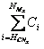

vol. 14 no. 3, September, 2009
vol. 14 no. 3, September, 2009 | ||||
La Web ha provocado un impacto irreversible en los distintos sistemas tradicionales de publicación, cuyas limitaciones en rapidez, puntualidad, gestión y distribución, entre otras, son cada vez más evidentes.
Disponer de una copia impresa ya no es un requisito para leer o enviar un documento textual, esto provoca que aparezcan nuevas formas de difusión y distribución de la información (Hane y Pitkow 2005), permitiendo de este modo la aparición de nuevos modelos de negocio (López Sánchez 2007), pese a que las tipologías documentales (que no formatos) que las explicitan prácticamente no han cambiado.
Por otra parte, el hecho de que todos los sistemas de publicación se vean obligados en la Web a publicar en un mismo soporte (disco duro) documentos legibles por máquina provoca la pérdida de las fronteras tradicionales entre los distintos tipos de documentación, tanto en función de su soporte (papel, cinta magnética, DVD, etc.), como de sus formatos de presentación fuera de línea (libro, revista, periódico, etc.).
Debido a esto, los distintos sistemas de publicación, pese a seguir siendo diferentes en su esencia y motivación, comienzan a converger y a presentar ciertos aspectos comunes.
Entre los distintos sistemas de publicación informativa (radio, televisión y prensa), esta convergencia es todavía más acusada, pues su diferencia fuera de línea se basa en el formato de comunicación. De hecho, "hoy, un periódico, una radio o una televisión en la Red llegan a parecerse tanto entre sí, que comienza a resultar anacrónico seguirles llamando según su viejo nombre" (Albertos 2001).
La prensa ha tomado cierta ventaja con respecto a los demás medios tradicionales -radio y televisión- tanto en presencia como en protagonismo dentro de la Red, donde la lucha por la visibilidad es esencial. Esta ventaja se debe, en parte, a las limitaciones en ancho de banda y factores de compresión (Jiménez López et al. 2002) que impedían hasta hace poco el adecuado desarrollo de la televisión y la radio en la Web.
Debido a la gran presencia, audiencia, expansión y grado de desarrollo de la prensa digital, y teniendo en cuenta la comentada convergencia que se viene produciendo entre distintos sistemas de publicación, su análisis puede servir de referente para conocer las futuras tendencias y modificaciones que puedan sufrir otros sistemas de publicación, como por ejemplo el científico.
En ese sentido, el presente de la prensa digital pasa ineludiblemente por conocer su presencia en la Web social, pues ésta es el presente de Internet.
De esta forma, el análisis de la presencia de la prensa digital española en la Web social, así como la propuesta y estudio de distintos métodos para llevar esto a cabo, son los propósitos generales de este trabajo.
La llegada de la Web social provoca una evolución de los servicios de recuperación de noticias debido a la conjunción de dos factores: el desarrollo de unas herramientas y aplicaciones web preparadas para describir y compartir contenidos, y la aparición de un conjunto de usuarios, cada vez mayor y más influyente, que las solicita.
Según Lerman (2008), estas aplicaciones se caracterizan por los siguientes elementos:
- Los usuarios crean información.
- Los usuarios comentan la información, con palabras clave o etiquetas.
- Los usuarios evalúan el contenido, de forma pasiva o activa.
- Los usuarios crean redes sociales asignando a otros usuarios con intereses afines como amigos o contactos.
Estas características (sobre todo las tres primeras) provocan la aparición de una nueva subclase de servicios de recopilación de noticias, que se distingue de las anteriores (bases de datos, clipping y buscadores) en tanto que las empresas que proporcionan las noticias a los usuarios no son empresas que actúan como intermediarias, sino que los mismos usuarios se encargan de recopilarlas y ofrecerlas a los demás lectores (gracias al desarrollo del software comentado anteriormente).
Estos "servicios de recopilación social de noticias", en la medida que han ido adoptando las características mencionadas por Lerman, han evolucionado desde su aparición. Se proponen las siguientes fases:
Corresponde al fenómeno conocido como redifusión y agregación de contenidos y no debe confundirse con los servicios de agregación de contenidos realizados por intermediarios.
Es un servicio automático, pues la noticia, publicada en un medio de información cualquiera, se describe y estructura automáticamente mediante un esquema de metadatos de noticias (como la familia RSS o Atom) a través de un script que se inserta en el código fuente del propio medio.
Es también un servicio social, pues son los propios usuarios los que se suscriben a los canales de noticias que les interesan para recibir posteriormente las descripciones bibliográficas de las mismas (e incluso el texto completo) en ciertas aplicaciones (agregadores de noticias) que ellos controlan, gestionan e incluso comparten.
Finalmente, es un servicio de publicación controlado, pues se depende de los canales de noticias que, desde el origen, los diferentes medios decidan que pueden redifundirse.
La utilización de sistemas de sindicación de contenidos mediante RSS aparece en la prensa española en Internet en 2003 en el diario El Mundo y la mayoría de medios ya ofrecen hoy esta funcionalidad (Guallar 2007), aunque su utilización por el público no está siendo tan amplia como se esperaba (Franganillo 2007).
Esta fase se distingue de la anterior en que los metadatos que describen la noticia ya no son creados de forma automática en el origen (en el medio), sino por los propios usuarios en el destino.
La publicación es controlada, pues existe un equipo de edición que decide, en función de la calidad, importancia o veracidad de la noticia, entre otras consideraciones, si aprueba o no su publicación.
Una característica fundamental es que el servicio es totalmente abierto y, además, funciona en su conjunto como una obra de referencia: es una recopilación social de descripciones bibliográficas de noticias.
El servicio pionero fue Slashdot , creado en septiembre de 1997, siendo su equivalente en España Barrapunto en 2000. Estos servicios se convierten en mecanismos de creación de esferas públicas en línea (Baoill 2000 ; Poor 2005).
Este carácter abierto y su creciente popularidad y alto nivel de visitas, provoca la aparición del llamado "efecto slashdot", fenómeno por el que se colapsa una web a causa de la cantidad de visitas en poco tiempo redirigidas desde este servicio (Adler, 1999 ; Notess 2007).
Supone la adaptación completa de estos modelos de comunicación periodística a la Web 2.0. Los usuarios, además de recopilar y describir las noticias, las ponderan mediante comentarios y votos decidiendo así su publicación o rechazo: las noticias se publican por promoción democrática; son editores sociales de noticias.
El primer servicio de este estilo surge a la luz a finales de 2004 con Digg. El éxito de este servicio lleva a la publicación de su versión española, Menéame, en diciembre de 2005.
La vertiginosa velocidad con la que estos servicios aparecen, evolucionan y caen en desuso en Internet hace difícil evaluar las posibles fases futuras de los servicios de recopilación de noticias. Sin embargo, destacan dos servicios que denotan posibles tendencias futuras.
Por una parte destaca CoRank, servicio donde cada usuario se crea su propia recolección de noticias que comparte con otros usuarios. Este servicio es similar al que proporcionan los agregadores de contenidos de canales de noticias (que también permiten compartir las suscripciones mediante un estándar de metadatos llamado OPML ), con la salvedad de que las noticias no llegan por redifusión, sino por recopilación y descripción del propio usuario.
Por otra parte, destaca el reciente Yahoo! Buzz, servicio que mezcla características de Digg y Menéame, junto con las de los buscadores gratuitos como Google News o el propio buscador de Yahoo! Podría encuadrar en la categoría de buscador social gratuito de noticias.
En adelante se usará la denominación GSN (gestores sociales de noticias) para designar de forma conjunta tanto a los RSN como a los ESN.
Los estudios realizados, a fecha de hoy, de los GSN se podrían dividir en las siguientes áreas:
a) Trabajos descriptivos/recopilatorios
Estudios centrados en la explicación de una o varias herramientas, desde la óptica de la Web 2.0. Suelen ser trabajos poco analíticos y provenientes de medios de prensa (Cohn 2007 ; Notess 2007) y/o blogs, fundamentalmente.
b) Estudios de usuarios
Esta área de estudio tiene tres objetivos claramente diferenciados. En primer lugar, conocer el comportamiento de los usuarios desde un punto de vista sociológico. En segundo lugar, usar el conocimiento anterior para mejorar los algoritmos de publicación de noticias en portada (pese a que éstos se suelen ocultar).
Finalmente, conocer al usuario lo máximo posible para poder realizar campañas posteriores de marketing y publicidad, completamente personalizadas.
Los primeros trabajos publicados acerca de este tema se centran en Slashdot (Poor 2005 ; Kaltenbrunner et al. 2007) y posteriormente en Digg.
Respecto a éste, destacan los exhaustivos estudios realizados por Lerman (2008), fundamentalmente orientados a la propuesta de modelos matemáticos con los que predecir la variación del número de votos que recibe una noticia con el tiempo, así como la variación del ranking de un usuario.
Asimismo, se destaca la propuesta de un factor de caída de la atención de los usuarios ante noticias nuevas basado en el número máximo de votos que éstas alcanzan en un intervalo de tiempo (Wu y Huberman 2007).
c) Estudios temáticos, de contenidos o tags.
Esta área de trabajo se centra en el estudio de las etiquetas o tags mediante las que los usuarios describen las noticias que envían al GSN.
Pese a que a nivel internacional no se detecta ningún estudio al respecto, a nivel español se puede destacar el Departamento de Lenguajes y Sistemas Informáticos de la Universidad de Sevilla (De la Rosa 2007), orientados al estudio de Menéame.
Estos trabajos suponen un comienzo en la aplicación de ciertos conceptos de la Bibliometría en gestores sociales de noticias.
Se detecta, no obstante, una carencia de trabajos orientados al estudio de la fuente (autoría) de las noticias y, por tanto, de la presencia de la prensa digital.
En este sentido se puede reseñar el estudio realizado por esCiudad.com (2007), que se queda en los datos y apenas profundiza, los trabajos en curso de Eva Ferreras (2008) y diversas estadísticas ofrecidas desde en el propio blog de Menéame (2007).
Recientemente (Orduña-Malea y Ontalba-Ruipérez 2008), se ha realizado un primer estudio centrado en la presencia de la prensa digital española en Menéame (figura 1), el GSN con mayor impacto y audiencia en España, a partir de métodos cuantitativos (número de noticias publicadas por medio) y cualitativos (promedio de votos y comentarios por noticia), asumiendo que los votos y los comentarios recibidos son un primer indicio de la calidad, o al menos el impacto, que una determinada noticia, y por tanto un determinado medio, tiene en un GSN.
Tal es el poder de los principales GSN y el interés de la prensa en luchar por el espacio web que, en apenas unos años, ésta ha pasado de intentar evitar que sus contenidos se difundieran sin su permiso a que prácticamente todos los periódicos digitales más importantes ya incluyan, a través de un plug-in, enlaces en sus noticias para que puedan ser enviadas directamente a los gestores sociales de noticias y, así, conseguir un mayor tráfico (Ferreras 2008).
En España, este hecho todavía es más significativo en medios como El País, si se tiene en cuenta que entre noviembre de 2002 y junio de 2005 había sido el único medio español que había decidido cerrar el acceso libre a su sitio haciéndolo completamente de pago (Guallar 2007).
Este cambio radical en la política de los medios de prensa viene motivado por el aumento potencial de visitas que puede recibir un sitio web cuando una noticia publicada en dicho sitio ha logrado aparecer en la portada de algún GSN.
El pionero en este aspecto, como se indicó al principio, fue Slashdot. Con posterioridad se ha repetido con diferente intensidad en los demás GSN provocando la aparición del "efecto Digg", "efecto Menéame", etc.
Con el objetivo de disponer de un nombre común a dicho fenómeno de forma independiente al servicio que lo provoque, en este trabajo se denominará en adelante "efecto GSN". En otros trabajos (Notess 2007) este efecto es definido como DDoS attack (Distributed Denial of Service), definición centrada en la consecuencia técnica del fenómeno, pero que no hace referencia a su origen en un GSN, sino a cualquier ataque al servidor.
La cantidad de visitas que recibe el medio, a riesgo de colapsar el servidor si se producen en gran número y breve espacio de tiempo es, hoy por hoy, el principal aval de los medios para justificar precios por publicidad.
De esta forma, los medios intentan aparecer en los distintos GSN bajo la hipótesis de que existe una mayor probabilidad de ganar futuros lectores si aumenta el número de noticias suyas éstos. Conjetura, por otra parte, todavía no comprobada.
Siguiendo con este razonamiento, no es de extrañar que los propios medios comiencen a plantearse la realización de campañas de publicidad para anunciarse en los GSN (Dans 2008a). La publicidad en estos servicios es un punto de reflexión importante de cara al futuro.
Debido al creciente interés de los diferentes medios por aparecer en los distintos GSN como método para obtener mayor visibilidad y, posiblemente, mayor audiencia en sus sedes web, la disponibilidad de unos indicadores que permitan medir la mayor o menor presencia e impacto de las noticias de un medio en un GSN se hace cada vez más necesaria.
Un GSN, como se ha visto, forma hoy parte del sistema de publicación informativo, mientras que los indicadores bibliométricos son válidos fundamentalmente para el sistema de publicación científico, pues asumen unos supuestos (Sancho 1990) que hacen comprensibles sus cálculos y soluciones.
No obstante, debido entre otras cosas a la convergencia entre los sistemas de publicación que se produce en la Web, tal como se reseña al comienzo, resulta comprensible pensar que la aplicación de estos indicadores es posible en un GSN, con las modificaciones y salvedades oportunas.
La introducción de indicadores bibliométricos en los GSN, como se ha visto anteriormente, es un aspecto hasta el momento poco abordado por la literatura, donde abundan más los estudios basados en índices de productividad.
Así como el número de noticias publicadas de un medio es un indicador de la productividad (o presencia) de un medio y el número de comentarios y votos que las noticias reciben son indicadores cualitativos tanto de una supuesta calidad de las noticias como de una mayor actividad de los usuarios, se precisan indicadores que permitan medir el impacto que los medios presentan en el GSN.
La utilidad de estos indicadores radica en la posibilidad de establecer un valor del impacto que las noticias de un determinado medio alcanzan en un GSN para poder comparar éste con otros indicadores (como la audiencia web, por ejemplo), de una forma estandarizada y no basada únicamente en aspectos meramente cuantitativos.
De esta forma, los objetivos que se plantea este trabajo son los siguientes:
- Proponer dos indicadores del impacto de un medio de prensa en un GSN, basados en la equivalencia noticia-artículo y medio-autor:
a) El ICP (impacto de comentarios ponderado), como indicador del impacto de un medio a lo largo de un mes, a partir del cálculo del Hcn (índice de comentarios a noticias), parámetro basado en el índice h pero aplicado a los comentarios que reciben las noticias de un determinado medio durante un mes.
b) El FPM (factor de poder del medio), como indicador global del impacto de un medio a lo largo de un mes, teniendo en cuenta tanto aspectos cuantitativos (número de noticias), como cualitativos (votos y comentarios recibidos).
- Validar los parámetros anteriores mediante su aplicación a las noticias provenientes de medios de prensa españoles publicadas en el GSN de mayor audiencia en España (Menéame), entre enero de 2007 y abril de 2008.
En primer lugar se detallan los indicadores propuestos en este trabajo (ICP y FPM) y finalmente la metodología empleada para su validación.
El índice h (Hirsch 2005) es un indicador reciente que pretende medir el impacto de la productividad científica de un autor.
Un científico tiene un índice h si "h" de sus N artículos publicados tiene al menos h citas cada uno y el resto de artículos (N-h), tiene menos de h citas recibidas cada uno de ellos.
De este modo, para el autor mostrado en la tabla 1, tras ordenar sus artículos por orden decreciente de citas recibidas, su índice h sería igual a 4.
| Autor X | Citas recibidas |
|---|---|
| Artículo 1 | 20 |
| Artículo 2 | 16 |
| Artículo 3 | 14 |
| Artículo 4 | 8 |
| Artículo 5 | 4 |
Debido a la facilidad de cálculo y a la debilidad de muchos profesionales por los rankings, el índice h tiene una gran aceptación y su aplicación y uso se expande cada vez más (Rodríguez Navarro e Imperial Ródenas 2007).
Así, no es de extrañar que una de las primeras experiencias en aplicar indicadores bibliométricos en la Web social haya estado basada en el mismo, a partir de la propuesta del llamado Hc (Cabezas 2008), como indicador para evaluar el impacto de los comentarios de un blog y, por tanto, del impacto del mismo en la comunidad.
No obstante, el índice h tiene una serie de limitaciones importantes, ya conocidas por los profesionales, basadas en que autores con carreras científicas muy diferentes pueden alcanzar un mismo índice. La tabla 2 muestra un ejemplo:
| Artículos | Citas recibidas (Autor 1) | Citas recibidas (Autor 2) | Citas recibidas (Autor 3) |
|---|---|---|---|
| Artículo 1 | 20 | 20 | 20 |
| Artículo 2 | 16 | 16 | 16 |
| Artículo 3 | 14 | 14 | 14 |
| Artículo 4 | 8 | 8 | 8 |
| Artículo 5 | 4 | 4 | 4 |
| Artículo 6 | 3 | 0 | - |
| Artículo 7 | 3 | 0 | - |
| Artículo 8 | 3 | 0 | - |
Estos tres autores tendrían un mismo índice h (igual a 4), pero con carreras muy diferentes.
Esta cuestión, ya tratada en diversas publicaciones (Egghe 2006;Rousseau 2006), se plantea en el foro ISSI (Martínez et al. 2006) donde, de forma privada, varios profesionales aportan las siguientes consideraciones:
- La idea detrás del índice h es la consistencia de los artículos de un autor, más allá del número de citas recibidas.
- Una buena idea sería poder encontrar un índice similar a la desviación típica, pero en el caso del índice h.
Tomando en consideración estas ideas, en este trabajo se propone un indicador basado en el índice h pero aplicado a los comentarios que recibe una noticia de un medio de prensa en un GSN a lo largo de un mes; a este indicador se le aplica un índice de corrección para minimizar las limitaciones vistas anteriormente.
El impacto de comentarios ponderado (ICP) se expresa mediante dos parámetros: el índice de comentarios propiamente dicho y un factor de corrección mostrado entre paréntesis:
Donde HCNx (índice de comentarios a noticias) corresponde al equivalente al índice h aplicado a los comentarios de recibidos por las noticias de un medio en un GSN a lo largo de un mes "x". El parámetro fc expresa un factor de corrección o ponderación.
Por tanto, un medio de prensa tiene un índice de valor HCNx, si "HCNx" de sus NMx noticias publicadas a lo largo de un mes, tiene al menos HCNx comentarios y el resto de noticias (NMx — HCNx) tienen menos de HCNx.
El factor de corrección, por su parte, sirve para ponderar la importancia de los trabajos con un número de comentarios menor a HCNx.
En este trabajo se plantean dos correctores, llamados "a" y "b", que se describen a continuación:
a) Factor de corrección "a":
Se calcula simplemente mediante la media de comentarios para las noticias con un número de comentarios menor a HCNx para el mes "x":
Este factor de corrección oscila entre los valores [0 H CNx)], donde:
 = sumatorio de comentarios de aquellas noticias cuyo número de comentarios sea inferior a HCNx en cada una de ellas;
= número de noticias que alcanzan un número de comentarios inferior a H CNx.
En caso de que (NMx — HCNx sea igual a "0", el factor de corrección "a" es nulo (que no 0), y se expresa mediante el símbolo (-).
b) Factor de corrección "b":
Este factor de corrección pretende contemplar el porcentaje de noticias que quedan por debajo del umbral H CNx) respecto del total de noticias publicadas en dicho mes:
Este parámetro oscila entre los valores [0 1]. En caso de ser “1”, significa que todas las noticias tienen al menos NMx comentarios cada una.
Tomando como base el caso planteado en la tabla 2, se puede calcular el ICP en un GSN, aplicando las siguientes equivalencias y asumiendo sus diferencias:
Autor - Medio.
Artículo - Noticia.
Cita recibida - Comentario recibido.
De esta forma, se obtendrían los siguientes valores (tabla 3):
| Medio | ICP(a) | ICP(b) |
|---|---|---|
| 1 | 4(3.25) | 4(0.5) |
| 2 | 4(1) | 4(0.5) |
| 3 | 4(4) | 4(0.8) |
Como se observa, el factor de corrección “a” pondera el valor del H CNx y lo adecua a la actividad por debajo del mismo, premiando el impacto y la actividad para las noticias con un número de comentarios inferior a H CNx .
Además, el hecho de estar calculado sólo para las noticias a lo largo de un mes, permite que no premie a los medios con una trayectoria más larga, tal como ocurre en el índice h (hecho que pondera el índice M mediante la consideración de los años de ejercicio científico de los autores).
El factor de corrección “b”, por su parte, premia lo contrario, es decir, es mayor cuantos menos artículos por debajo del H CNx (en teoría, los menos citados) se poseen.
Pese a que el indicador ICP sirve para evaluar el impacto de un medio en un GSN durante un mes, se propone igualmente la aplicación de dicho factor de ponderación para el índice h original.
El Impacto de Comentarios Ponderado, no obstante, refleja una parte únicamente de la importancia de un medio, dejando de lado el otro valor cualitativo estudiado con anterioridad: los votos.
En este punto, se propone el cálculo de un nuevo indicador, llamado Factor de Poder de un Medio (FPM), con el objetivo de calcular de una forma completa y diferente a la metodología basada en Hirst, con el fin de conocer el poder que un medio tiene en un GSN.
El FPM se calcula en este trabajo, al igual que el ICP, para un medio durante un intervalo de un mes. Su expresión matemática es la siguiente:
Donde PMx y MMx corresponden a la presencia (factor cuantitativo) y al impacto (factor cualitativo) del medio m en un mes x, respectivamente.
La presencia del medio expresa el porcentaje de noticias de éste respecto al total de noticias de medios publicadas en un GSN a lo largo del mes x, y se calcula de la siguiente forma:
Por su parte, el impacto del medio se calcula como la media del factor de poder de cada noticia en particular. Su expresión es la siguiente:
Donde el FPN(x) corresponde al Factor de Poder de la Noticia, que se calcula de la siguiente manera:
Donde:
VMx = Número de votos que ha recibido la noticia.
= Número medio de votos realizados a noticias de medios de prensa, durante el mes x.
CMx = Número de comentarios que ha recibido la noticia.
= Número medio de comentarios realizados a noticias de medios de prensa durante el mes x.
Los valores medios de los votos y comentarios, restringidos a medios de prensa para poder comparar en igualdad de condiciones, sirven para relativizar el valor de los votos y comentarios recibidos por una noticia, con respecto a la media.
La razón fundamental para realizar esto es que no es lo mismo recibir 200 comentarios un mes en el que la media de comentarios (a noticias de prensa) ha sido 300, que en un mes en el que la media ha sido 500, donde el impacto de la noticia, pese a tener el mismo número de comentarios, ha sido claramente inferior.
IMx no tiene límite superior, aunque es extraño que alcance valores muy superiores a "2".
Por su parte, PMx tiene un valor máximo de "1", pues está limitado por el número máximo de noticias de prensa publicadas durante un mes. En el caso hipotético de que todas las noticias de prensa publicadas fuesen del mismo medio (algo difícil de suceder), su valor sería igual a "1".
Puesto que este valor será bajo de forma general, se multiplica por "10", para obtener un valor del orden de cada uno de los componentes de IMx. Pese a ello, alcanzar un valor igual a "0.5" ya se considerará de importancia.
Así, el FPM alcanzará valores que oscilarán generalmente entre "1.5" y "2.5". Aquellos que bajen de este intervalo serán medios con poco poder, y los que superen el intervalo, medios con un gran poder en el GSN.
Análisis de contenido descriptivo longitudinal retrospectivo de las 23.373 noticias remitidas a Menéame desde el 1 de enero de 2007 hasta el 30 de abril de 2008 (muestra total de 16 meses).
El procedimiento se basa en recoger, para cada noticia publicada en Menéame, la fecha de su publicación, el número de votos y comentarios recibidos y el medio, para con ello, posteriormente, decidir si esa noticia proviene de un medio nacional de prensa digital o no.
Los datos relativos a las noticias publicadas se recogen manualmente de febrero a mayo de 2008 y son analizados durante el mes de junio. La captura se realiza a través de la página de portada (lugar donde se archivan la totalidad de noticias enviadas y publicadas desde el inicio de estos servicios) de Menéame.
Para los objetivos de este trabajo, no se considera noticia de prensa nacional digital a las enviadas desde blogs, medios de prensa extranjeros, ni otros medios de comunicación, como páginas web de radio, televisión o portales temáticos. Sin embargo, sí que se tienen en cuenta las agencias de noticias, como Reuters, Europa Press o BBC Mundo, entre otras.
De esta misma forma, no son consideradas como noticias de prensa nacional todas las enviadas desde las secciones de blogs de algunos periódicos digitales (periodismo ciudadano), pues el objetivo del trabajo es precisamente estudiar la visibilidad de las noticias formales y tradicionales, redactadas por profesionales en medios de prensa.
Tampoco se consideran como tales el envío de imágenes, viñetas o tiras cómicas, aunque éstas sí provengan de un medio de prensa nacional, por no considerarse estos envíos como noticias. Asimismo, quedan excluidas las noticias aparecidas en semanarios o revistas.
Todos los datos son posteriormente volcados a una hoja de cálculo Excel, desde la cual son analizados.
El total de noticias enviadas a Menéame durante el intervalo de muestreo ha sido de 23.373, de las cuales 8.505 (36,4%) se han considerado como noticias provenientes de medios de prensa digitales españoles y, por tanto, constituyen la muestra de noticias sobre la que se aplican los indicadores propuestos.
El análisis completo de los cinco medios con más número de noticias en Menéame se muestra en la tabla 4.
| Mes | El País | 20 minutos | El mundo | La vanguardia | El Periódico | ||||||||||
|---|---|---|---|---|---|---|---|---|---|---|---|---|---|---|---|
| Hcn | f(a) | f(b) | Hcn | f(a) | f(b) | Hcn | f(a) | f(b) | Hcn | f(a) | f(b) | Hcn | f(a) | f(b) | |
| Enero | 31 | 16,75 | 0,26 | 30 | 18,75 | 0,41 | 28 | 14,09 | 0,45 | 14 | 10,6 | 0,74 | 12 | - | 1 |
| Febrero | 31 | 17,55 | 0,3 | 30 | 17,33 | 0,56 | 23 | 15,83 | 0,56 | 11 | 6,25 | 0,73 | 9 | 7 | 0,82 |
| Marzo | 34 | 18,15 | 0,34 | 31 | 18,27 | 0,33 | 24 | 15,53 | 0,43 | 17 | 13,38 | 0,68 | 15 | 9,6 | 0,75 |
| Abril | 28 | 17,13 | 0,38 | 25 | 14,45 | 0,46 | 23 | 12,96 | 0,48 | 19 | 11,64 | 0,58 | 19 | 12,67 | 0,68 |
| Mayo | 28 | 17,63 | 0,44 | 30 | 22,26 | 0,61 | 27 | 18,45 | 0,57 | 19 | 11,2 | 0,66 | 20 | 17,29 | 0,74 |
| Junio | 32 | 21,51 | 0,48 | 33 | 19,67 | 0,52 | 28 | 16,25 | 0,58 | 18 | 13,6 | 0,78 | 20 | 17 | 0,8 |
| Julio | 31 | 20,52 | 0,48 | 29 | 20,6 | 0,54 | 26 | 16,8 | 0,63 | 17 | 13,67 | 0,65 | 17 | 7 | 0,94 |
| Agosto | 33 | 22 | 0,42 | 22 | 16,89 | 0,71 | 29 | 17,95 | 0,59 | 16 | 10,75 | 0,8 | 16 | 13 | 0,8 |
| Septiembre | 33 | 21,05 | 0,46 | 30 | 19,6 | 0,6 | 30 | 20,08 | 0,54 | 28 | 16,07 | 0,65 | 14 | 13 | 0,81 |
| Octubre | 36 | 21,12 | 0,36 | 31 | 21,14 | 0,58 | 34 | 21,16 | 0,44 | 27 | 17,32 | 0,55 | 20 | 17,5 | 0,91 |
| Noviembre | 37 | 23,67 | 0,43 | 33 | 22,59 | 0,47 | 30 | 18,17 | 0,46 | 27 | 19,36 | 0,71 | 21 | 15,8 | 0,81 |
| Diciembre | 34 | 23,15 | 0,51 | 25 | 17,5 | 0,76 | 35 | 23,16 | 0,44 | 17 | 10,8 | 0,77 | 17 | 15,67 | 0,7 |
| Enero | 34 | 22,93 | 0,45 | 36 | 25,9 | 0,63 | 29 | 20,31 | 0,5 | 27 | 20,2 | 0,73 | 24 | 19,2 | 0,83 |
| Febrero | 38 | 26,88 | 0,48 | 31 | 25 | 0,62 | 37 | 26,56 | 0,54 | 26 | 19,35 | 0,6 | 13 | - | 1 |
| Marzo | 37 | 24,27 | 0,45 | 35 | 23,28 | 0,58 | 36 | 24,78 | 0,57 | 26 | 16,58 | 0,68 | 15 | 14 | 0,88 |
| Abril | 41 | 28,26 | 0,43 | 37 | 26,81 | 0,54 | 36 | 21,9 | 0,55 | 31 | 21,78 | 0,78 | 20 | 14,33 | 0,87 |
| MEDIA | 34 | 21,41 | 0,42 | 31 | 20,63 | 0,56 | 30 | 19,00 | 0,52 | 21 | 14,53 | 0,69 | 17 | 13,79 | 0,83 |
Se observa cómo el medio que ha alcanzado un valor máximo para HCNx ha sido El País, con un valor de 41 (abril 2008). El f(a) asociado a este valor (28,26) es, a su vez, el mayor alcanzado.
Por otra parte, el valor mínimo para HCNx lo ostenta El Periódico de Catalunya, con un valor de 9 (febrero 2007), mientras que el f(a) mínimo calculado corresponde a La vanguardia, con 6,25 (febrero 2007).
El f(b) máximo posible (1) lo alcanza únicamente El Periódico de Catalunya, en dos ocasiones (enero 2007 y febrero 2008). El menor f(b) calculado corresponde a El País, con un valor de 0.26 (enero 2007).
La evolución mensual del HCNx, para cada medio, es mostrada en la figura 2.
Se observa un primer grupo formado por El País, 20 Minutos y El Mundo, que han aumentado sus resultados desde enero de 2007 hasta abril de 2008. En concreto, El País ha pasado de 31 a 41; 20 Minutos de 30 a 37 y El Mundo de 28 a 36.
Relativamente por debajo, pero con un crecimiento muy reseñable, se sitúa La Vanguardia. Por último, y ya muy retrasado, aparece El Periódico de Catalunya.
Se constata una diferencia importante entre estos resultados y los obtenidos por Orduña-Malea y Ontalba-Ruipérez (2008) para la evolución del promedio de comentarios mensuales por noticia, donde El País alcanzaba unas cifras mucho más discretas, debidas sobre todo a la gran cantidad de noticias que publica mensualmente.
Otro aspecto interesante de estudio es el análisis de los dos factores de corrección: f(a) y f(b).
El corrector f(a) es un indicativo de la cantidad de comentarios que reciben las noticias de un medio, en un mes, que no alcanzan HCNx comentarios. Es una manera de cuantificar la altura de la "larga cola" de comentarios.
La figura 3 detalla la alta correlación existente entre HCNx y su factor de corrección f(a), lo cual indica que, a mayor índice de comentarios, mayor es la cantidad de comentarios que reciben las noticias por debajo del umbral HCNx.
La figura 4 muestra la distribución de los comentarios para todas las noticias publicadas por El País en el mes de marzo de 2007 (mes con mayor HCNx), mostrando en rojo el punto umbral. La correlación indica que cuanto más a la izquierda se sitúe el umbral -mayor HCNx - la media del número de noticias por debajo de éste será también mayor -mayor f(a)-. Por ello, a igualdad de HCNx, un mayor f(a) nos mostrará una larga cola de mayor importancia y, por tanto, de mayor valor.
Por su parte, el corrector f(b) es un indicador no de la altura de la larga cola, sino de su anchura, pues tiene en cuenta la cantidad de noticias que no superan el umbral respecto al total de noticias publicadas.
Como se observa en la figura 5, este corrector presenta niveles inversos al f(a) y, por tanto, también al HCNx.
Se muestra un ranking prácticamente inverso al obtenido por los procedimientos anteriores. El Periódico muestra los niveles más elevados, llegando incluso en dos ocasiones (enero 2007 y febrero 2008) al valor máximo (igual a "1"). Esto significa que todas las noticias superan el umbral, no existiendo "larga cola".
El corrector f(b) muestra de una forma sencilla cómo los medios que publican una cantidad de noticias menor, tienen, en comparación, un gran impacto en comentarios.
Pese a ello, se debe tener en cuenta que para que un medio como El País, con la cantidad de noticias que publica, alcanzase unos valores semejantes en f(b), esto supondría una casi triplicación de su HCNx. No obstante, este corrector puede marcar de algún modo la cantidad de noticias "menores" por mes en porcentaje.
Finalmente, se muestra el ICP promediado para todos los meses, de forma que se obtenga un valor más real que el obtenido para un mes determinado, eliminando de esta forma el crecimiento debido a noticias puntuales con gran número de comentarios.
| Medio | ICP(a) | ICP(b) |
|---|---|---|
| El País | 34(21,41) | 34(0,42) |
| 20 Minutos | 31(20,63) | 31(0,56) |
| El Mundo | 30(19) | 30(0,52) |
| La vanguardia | 21(14,53) | 21(0,69) |
| El Periódico de Catalunya | 17(13,79) | 17(0,83) |
Se observa como la media del HCNx concuerda con el ranking de comentarios totales recibidos, donde El País es primero (47.059 comentarios totales), seguido por 20 Minutos (35.868), El Mundo (35.338), La vanguardia (17.988) y El Periódico de Catalunya (12.836).
El FPM pretende ser un indicador global de la calidad e impacto de un medio en el GSN, de forma que se tengan en cuenta tanto aspectos cuantitativos (número de noticias de ese medio publicadas) como cualitativos (votos y comentarios recibidos) y, además, relativizarlos respecto a los valores obtenidos en cada mes.
A continuación se detallan en la tabla 6 los resultados obtenidos para los cinco medios de prensa más destacados en Menéame.
| Mes | Imx | FPM | Imx | FPM | Imx | FPM | Imx | FPM | Imx | FPM |
|---|---|---|---|---|---|---|---|---|---|---|
| El País | El País | El Mundo | El Mundo | 20 minutos | 20 minutos | La vanguardia | La vanguardia | El Periódico | El Periódico | |
| Enero | 1,87 | 2,64 | 2,11 | 2,51 | 2,12 | 2,60 | 1,78 | 1,90 | 2,47 | 2,55 |
| Febrero | 1,99 | 2,73 | 2,07 | 2,36 | 2,19 | 2,58 | 1,54 | 1,65 | 1,83 | 1,91 |
| Marzo | 2,15 | 2,79 | 2,10 | 2,46 | 2,01 | 2,61 | 1,67 | 1,83 | 1,88 | 2,01 |
| Abril | 1,75 | 2,26 | 1,81 | 2,14 | 1,97 | 2,35 | 2,06 | 2,29 | 2,25 | 2,44 |
| Mayo | 1,75 | 2,16 | 2,03 | 2,33 | 2,53 | 2,85 | 1,60 | 1,79 | 2,03 | 2,20 |
| Junio | 2,00 | 2,50 | 1,87 | 2,23 | 1,97 | 2,44 | 1,77 | 1,94 | 1,96 | 2,15 |
| Julio | 1,90 | 2,41 | 1,96 | 2,29 | 2,27 | 2,71 | 1,58 | 1,79 | 2,38 | 2,52 |
| Agosto | 1,83 | 2,47 | 2,22 | 2,62 | 1,99 | 2,25 | 1,62 | 1,79 | 1,97 | 2,13 |
| Septiembre | 1,92 | 2,44 | 1,98 | 2,39 | 2,15 | 2,52 | 1,87 | 2,18 | 1,60 | 1,72 |
| Octubre | 1,95 | 2,59 | 1,89 | 2,39 | 2,34 | 2,68 | 1,84 | 2,15 | 2,56 | 2,70 |
| Noviembre | 2,09 | 2,65 | 1,96 | 2,38 | 2,09 | 2,55 | 2,08 | 2,33 | 1,95 | 2,12 |
| Diciembre | 1,96 | 2,46 | 1,92 | 2,51 | 2,32 | 2,56 | 1,94 | 2,10 | 1,94 | 2,09 |
| Enero | 1,92 | 2,39 | 1,83 | 2,19 | 2,01 | 2,37 | 1,93 | 2,17 | 2,34 | 2,46 |
| Febrero | 2,07 | 2,61 | 2,00 | 2,48 | 1,94 | 2,29 | 1,79 | 2,09 | 1,89 | 1,98 |
| Marzo | 1,83 | 2,36 | 2,36 | 2,76 | 1,87 | 2,26 | 1,97 | 2,22 | 1,82 | 1,93 |
| Abril | 2,06 | 2,62 | 1,86 | 2,25 | 2,09 | 2,49 | 2,16 | 2,40 | 1,96 | 2,10 |
| TOTAL | 31,03 | 40,08 | 31,96 | 38,29 | 33,88 | 40,10 | 29,20 | 32,60 | 32,83 | 35,01 |
La diferencia de valor entre el FPM calculado y el IMx es el valor debido al PMx, cuyo valor máximo, como se indica en el apartado dedicado a la metodología, es "10", pero que raramente superará la unidad.
En la figura 6 se detalla la evolución del IMx (impacto del medio) a lo largo de los meses.
Se observa cómo el impacto oscila en torno a un valor de 2. Únicamente en dos ocasiones (20 Minutos en mayo de 2007 y El Periódico en octubre de 2007) logran alcanzar o superar los 2.5 puntos.
La evolución tiende a ser bastante irregular, sucediéndose subidas y bajadas prácticamente cada mes. Por ejemplo, El Mundo se sitúa en primera posición en marzo de 2008 y, por el contrario, último al mes siguiente.
Por estas razones, se supone que un valor acumulado de este valor puede proporcionar lecturas más interesantes, pues el impacto mensual está influenciado por el impacto de noticias determinadas y puntuales y, por ello, no responden a ninguna tendencia clara.
| Medio | Imx | Medio | FPM |
|---|---|---|---|
| 20 Minutos | 33,88 | 20 Minutos | 40,01 |
| El Periódico | 32,83 | El País | 40,08 |
| El Mundo | 31,96 | El Mundo | 38,29 |
| El País | 31,03 | El Periódico | 35,01 |
| La vanguardia | 29,2 | La vanguardia | 32,6 |
Este aspecto se observa en la tabla 7, donde los resultados obtenidos son diferentes a los aportados por el resto de mediciones. En impacto acumulado a lo largo de los 16 meses, El País aparece en una discreta cuarta posición, siendo superado por 20 Minutos (primera en impacto), por El Periódico de Catalunya y por El Mundo.
Respecto al FPM acumulado, El País escala posiciones, apareciendo en segundo lugar. Se comprueba cómo su alta presencia en número de votos propicia esta subida.
Finalmente, 20 Minutos queda como el medio con más poder en Menéame, en función de los cálculos debidos a los indicadores propuestos.
1. Los parámetros propuestos en el trabajo (ICP y FPD) son válidos para calcular el grado de impacto de la prensa digital en los GSN, aportando más información que los meros indicadores cuantitativos basados en el conteo de número de noticias, votos y comentarios recibidos.
2. El análisis de la evolución mensual del ICP muestra unos resultados diferentes al de la evolución de los comentarios por noticia, ofreciendo datos más ajustados a tendencias que a oscilaciones provocadas por noticias puntuales con gran impacto. No obstante, el ranking del ICP promedio (en los meses estudiados) concuerda con el ranking de comentarios totales recibidos.
3. La altura de la larga cola de los comentarios a un medio durante un mes, f(a), es, de forma general, proporcional al valor del Hcn (punto umbral). Este hecho se cumple para los cinco medios con más presencia en Menéame.
4. La evolución de la anchura de la larga cola de los comentarios a un medio durante un mes, f(b), es, de forma general, inversamente proporcional a la evolución del valor del Hcn (punto umbral). Este aspecto, sin embargo, no se cumple para El Mundo, quien, a pesar de tener menor Hcn que 20 Minutos, también tiene menor f(b), lo que indica que posee una "larga cola" más estrecha y más corta que 20 Minutos, por lo que se deduce que su impacto real (en comentarios recibidos) está siendo menor.
5. El FPM presenta valores que oscilan en torno a 2 y muestra claramente el impacto mensual de las noticias de un medio. No obstante, para un análisis más completo, es preferible su valor acumulado durante varios meses, para poder realizar rankings de impacto de medios.
6. El Imx muestra cómo El País, pese a ser el medio con más número de noticias publicadas en Menéame, es solamente el 4º en impacto. 20 Minutos se sitúa el primero (33,88), seguido por El Periódico de Catalunya (32,83) y El Mundo (31,96).
7. El medio de prensa con mayor factor de poder (FPM) es 20 Minutos, seguido de cerca por El País, que alcanza un valor alto gracias sobre todo a la gran presencia, medida en número de noticias publicadas, que tiene en Menéame. Le siguen en el ranking El Mundo, El Periódico de Catalunya y, más rezagado, La vanguardia.
Enrique Orduña-Malea es ingeniero técnico de telecomunicaciones (EPSG), licenciado en documentación (UPV) y master en contenidos y aspectos legales en la sociedad de la información. Es ayudante de investigación en la UPV y redactor jefe del Anuario ThinkEPI. enorma@upv.es
José-Antonio Ontalba-Ruipérez es licenciado en geografía e historia, licenciado y doctor en documentación. Actualmente es profesor de los estudios de documentación en la Universidad Politécnica de Valencia joonrui@upv.es
| Find other papers on this subject | ||
© the authors, 2009. Last updated: 6 August, 2009 |
|